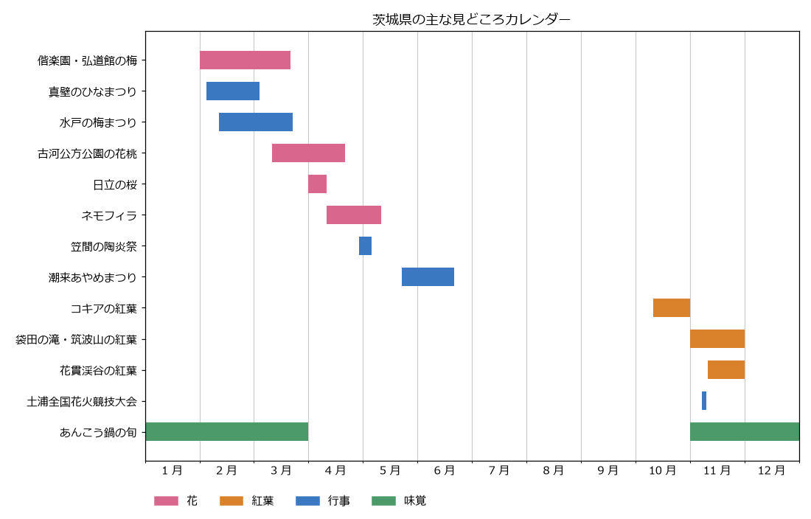

季節の見どころと祭り
茨城県では、早春の梅から始まり、春のネモフィラ、初夏のあやめ、秋のコキアと紅葉まで、季節ごとに見どころが移り変わる。この章では、季節ごとの見どころと主な祭り・行事をまとめる。
花や紅葉の見頃はその年の気候によって前後し、祭りの日程も年ごとに変わる。出かける前に、必ず各公式サイトで最新の情報を確認すること。
見どころカレンダー
主な花・紅葉の見頃と行事の時期を次の図に示す。時期は各公式サイトに記載された例年の目安と、2026 年の開催実績をもとにしている。


茨城県の主な見どころカレンダー
春（3 月から 5 月）
見どころ |
時期の目安 |
内容 |
|---|---|---|
偕楽園・弘道館の梅 |
2 月から 3 月 |
偕楽園には約 100 品種 3,000 本、弘道館には約 60 品種 800 本の梅がある。早咲きから遅咲きまで品種が多いため、長い期間楽しめる（県央地域を参照）。 |
古河公方公園の花桃 |
3 月中旬から 4 月中旬 |
約 1,800 本、6 品種の花桃が品種ごとに順に咲く（県西地域を参照）。 |
桜 |
4 月上旬から下旬 |
日立市のかみね公園（約 1,000 本）と平和通り（約 120 本）のソメイヨシノは 4 月上旬が見頃である。那珂市の静峰ふるさと公園には八重桜が約 2,000 本あり、ソメイヨシノより遅れて咲く。 |
国営ひたち海浜公園のネモフィラ |
4 月中旬から 5 月上旬 |
「みはらしの丘」一面が青く染まる（県央地域を参照）。 |
笠間稲荷神社の藤 |
5 月上旬 |
県の天然記念物に指定された藤が咲く。 |
夏（6 月から 8 月）
見どころ |
時期の目安 |
内容 |
|---|---|---|
水郷潮来あやめ園のあやめ |
5 月下旬から 6 月下旬 |
約 500 種 100 万株のあやめが咲く。例年は 6 月 10 日ごろが最も見頃である（鹿行地域を参照）。 |
海水浴 |
7 月から 8 月 |
大洗、鹿行地域の鹿島灘沿岸などに海水浴場がある。開設期間は海水浴場ごとに異なる。 |
秋（9 月から 11 月）
見どころ |
時期の目安 |
内容 |
|---|---|---|
国営ひたち海浜公園のコキア |
10 月中旬から下旬 |
夏の間は緑色のコキアが、10 月中旬に赤く色づく。10 月下旬には赤と茶色が混ざった色合いになる。 |
袋田の滝・筑波山の紅葉 |
11 月上旬から下旬 |
|
花貫渓谷の紅葉 |
11 月中旬から下旬 |
汐見滝吊り橋の周辺が色づき、吊り橋のライトアップも行われる。 |
冬（12 月から 2 月）
見どころ |
時期の目安 |
内容 |
|---|---|---|
あんこう鍋 |
11 月から 3 月 |
冬の茨城を代表する味覚で、県北の沿岸部や大洗などで味わえる（食と名産品を参照）。 |
袋田の滝の氷瀑 |
厳冬期 |
寒さが厳しいと滝が凍りつく。気温によっては凍らない年もある。 |
初日の出 |
1 月 1 日 |
太平洋に面しているため、大洗磯前神社の神磯の鳥居などで海から昇る初日の出を拝める。 |
主な祭り・行事
日程は 2026 年の開催実績である。翌年以降の日程は各公式サイトで確認すること。
名称 |
2026 年の日程 |
内容 |
|---|---|---|
真壁のひなまつり（桜川市） |
2 月 4 日から 3 月 3 日 |
真壁の町の商家や民家に、それぞれの家のひな人形が飾られる。2003 年に始まった（県西地域を参照）。 |
水戸の梅まつり（水戸市） |
2 月 11 日から 3 月 22 日 |
偕楽園と弘道館を会場とする梅の祭りで、2026 年で第 130 回を数える。 |
鹿島神宮の祭頭祭（鹿嶋市） |
3 月 9 日（神事）、3 月 14 日（祭頭囃） |
五穀豊穣を祈る春の祭りで、色とりどりの衣装を着た人々が囃しながら練り歩く。国の選択無形民俗文化財である。神事は毎年 3 月 9 日に行われ、祭頭囃は 3 月 9 日以降の直近の土曜日に行われる。 |
日立さくらまつり（日立市） |
4 月 1 日から 12 日 |
桜の時期に開かれる祭りで、期間中にユネスコ無形文化遺産「日立風流物」の山車 1 台が公開される。 |
笠間の陶炎祭（笠間市） |
4 月 29 日から 5 月 5 日 |
「陶炎祭」は「ひまつり」と読む。笠間芸術の森公園で開かれる陶器市で、200 以上の窯元や作家などが出店する。2026 年で第 45 回を数える。 |
潮来あやめまつり（潮来市） |
5 月 22 日から 6 月 21 日 |
水郷潮来あやめ園で開かれる祭りで、2026 年で第 75 回を数える。嫁入り舟などの催しがある（鹿行地域を参照）。 |
土浦全国花火競技大会（土浦市） |
11 月 7 日 |
全国の花火師が技を競う大会で、約 2 万発の花火が打ち上げられる。2026 年で第 95 回を数える。 |
日立風流物
日立風流物は、日立市の神峰神社の祭礼で披露される、高さ約 15 m、5 層の巨大な山車とからくり人形の芝居である。1977 年に国の重要無形民俗文化財に指定され、2016 年には全国の祭りとともにユネスコ無形文化遺産「山・鉾・屋台行事」に登録された。毎年 4 月の日立さくらまつりで 1 台が公開されるほか、7 年に 1 度の神峰神社大祭礼では 4 台すべてが公開される。直近の大祭礼は 2026 年 5 月に行われた。